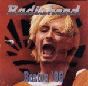

Boston '96
CD 590
Tracks 1-15 from The Avalon, Boston 13/Apr/96
<1> My Iron Lung
<2> Bones
<3> High & Dry
<4> Bulletproof.. I Wish I Was
<5> Street Spirit [Fade Out]
<6> Planet Telex
<7> Stop Whispering
<8> Nice Dream
<9> Lucky
<10> Creep
<11> Lurgee
<12> Anyone Can Play Guitar
<13> Just
<14> Blow Out
<15> Fake Plastic Trees
Track 16 from Milton Keynes, England 30/Jul/listed as 96, but more likely 95
<16> The Bends
Type of recording : Radio Broadcast
Quality : Excellent
Notes : Track 16 is much better quality than the rest, which is excellent
but with some crowd noise, cheering between songs. CD is identical to Best Thing You Ever Had and nearly identical to Data Complete.